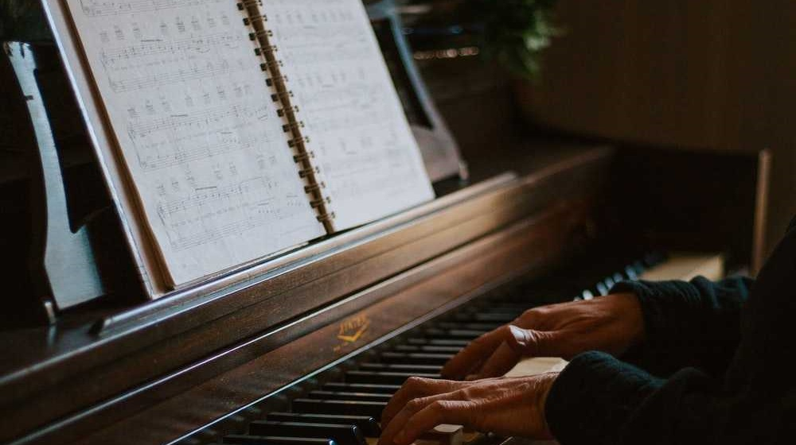

About

I offer piano lessons to children from 1st grade to 8th grade. During this time of a child’s life, they are in dire need of finding a place to excel and be the best they can be. I am an outlet to those children that need a way to express themselves and find value in themselves when they may not seem very confident. Lessons in piano teach so many valuable lessons besides piano. Many children lack confidence in their abilities when they are young, but they need to know that they have an infinite potential to them that needs to be savaged and not wasted. By your child taking my piano lessons, they will show a great boost in confidence.